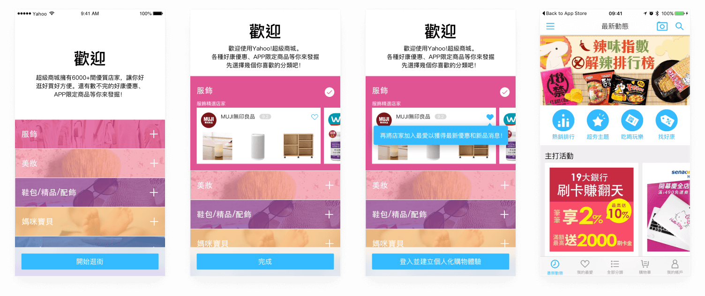
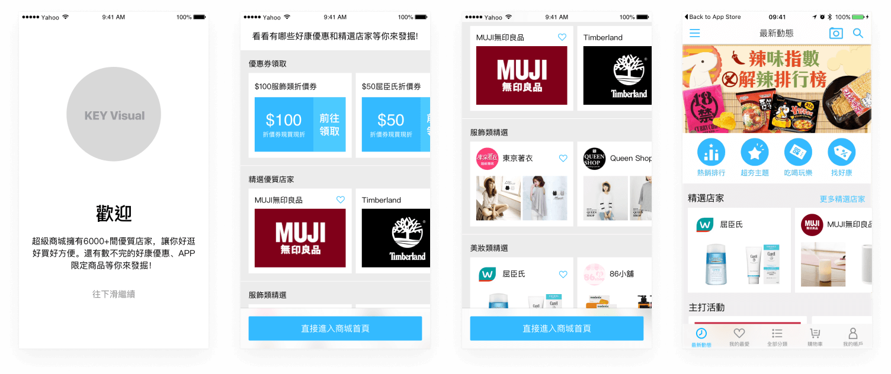

Interaction design for defining the experience, wireframes and prototypes, 2017
Yahoo Stores App was the first app of Yahoo E-commerce apps in APAC region. (There are 3 E-commerce platforms in Taiwan, 2 in Hong Kong.) And the onboarding experience had not changed since it was launched. Features and user needs changed a lot. So It was time to iterate the experience.
In the first step of my process, I started to examine if there were any problems in the existing onboarding experience. The problems were below:
The original onboarding experience
Before starting to work on hands-on design explorations, the goal and value of new onboarding experience should be define. I discussed with PM and the design lead of Yahoo Stores to define to goal: The goal of onboarding for Yahoo Stores App was not to teach the users how to use the platform, but to guide users to understand and experience the core value of this platform so that users may have the next visit. And the core value of Yahoo Stores is that there are over 6000 stores in this marketplace which is the biggest B2B2C E-commerce platform in Taiwan. Users can find many stores with various categories. Therefore, we needed to make users know this and engage with the stores. The core of new onboarding experience will be: Understand the value → Engage with stores → Experience the value of Yahoo Stores. Then I started to explore the flow and interactions.
In the early explorations, I kept the actions of selecting categories and integrated it with the onboarding messages of core values to reduce steps. The stores were introduced right after user selecting preference of categories. For each store, there are 3 most popular products of the store so that user can understand what the store is selling. Then I discuss with PMs to remove the original step 3 and 4. Step 3 and 4 was to introduce latest features. If we want to introduce any new features, there should be more guidance but not just a splash blocking the next action. And for new users, every feature is new. If we’d like the user to have the awareness of new features, there should be a more engaging way. Below are the first 2 explorations:
early exploration - 1
early exploration - 2
As we discussed base on prototypes of the concepts, we found that there could be some improvements. Reducing steps of onboarding is good. However, the information is too overwhelming. Users need to read the messages and select the categories at the same time. Therefore, I decided to make it separated and let each step has a clear mission. The first step is to communicate a clear message. And the second step is to start engage the user with the core values. Also, we found that selecting categories to have the user preferences is not very helpful. The products in Stores is categorized based on the business need. So the categories were too broad. Even if users select the categories, the recommendations after onboarding may not be relevant to users. We needed other signals for recommendations. Therefore, I proposed to remove selecting categories. Last, I did other explorations on the step 2: provide coupons and having featured stores with big brand.
The 1st design iteration
Prototype of the 1st design iteration
With the more concrete design and prototype, I shared my design in our internal design review with all Yahoo APAC designers to get feedback from different perspectives. The major feedback was on the store cards. To maintain the content density, the store cards were small. The pictures of the stores and products wasn’t clear enough to trigger users. So I stepped back to examine what information should be presented. And at that time, there were more and more big or famous brands joining Yahoo Stores. The awarenesses of these big brands are so strong that we don’t even need to show the product images. Showing these big-brand images might even be better. In the feedback from Google Play and App Store, many users were surprised to see some of the big brands they didn't expect. Besides the design feedback, there are also some technical and business constraints. With these input, I iterated the design to the final solution.
In the final solution, there are two major onboarding steps. The first step is to introduce the core value of Yahoo Stores: there are more than 6,000 stores with various promotion and coupons in the platform. The second step is to provide curated stores to let the users know there are famous official brands and stores in this platform. This builds the trust and makes users start to have the intention to engage with Yahoo Stores. The curated stores are divided in to 13 categories so that users can skip uninterested categories easily with vertically scroll and browse interested categories with horizontal scroll. Users can add these stores to their favorite stores list so that they can stay up to date with these stores’ latest activities, promotions and coupons. When users end the onboarding steps, there will be a popover in the home screen to indicate that all the users’ favorite stores are in the second tab. And users can start to browse the feed from their favorite stores.
Final design solution
Prototype of the final design solution
After this new onboarding experience was release, we could see positive results from our internal data. Most of the users add stores to favorite and return to Yahoo Stores to browser and shop in their favorite stores. And this was just the first step of improving shopping experience. We done some iterations based on the data after release. Also, We leverage the information gathered from onboarding to personalize the shopping experience of Yahoo Stores.